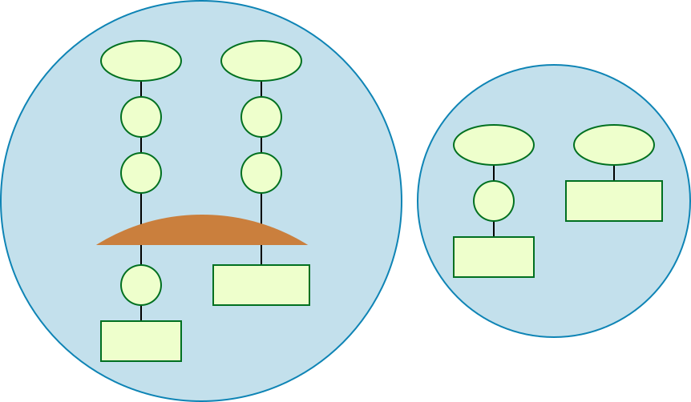

Fixtures reference¶
See also
See also
Built-in fixtures¶
Fixtures are defined using the @pytest.fixture decorator. Pytest has several useful built-in fixtures:
capfdCapture, as text, output to file descriptors
1and2.capfdbinaryCapture, as bytes, output to file descriptors
1and2.caplogControl logging and access log entries.
capsysCapture, as text, output to
sys.stdoutandsys.stderr.capsysbinaryCapture, as bytes, output to
sys.stdoutandsys.stderr.cacheStore and retrieve values across pytest runs.
doctest_namespaceProvide a dict injected into the docstests namespace.
monkeypatchTemporarily modify classes, functions, dictionaries,
os.environ, and other objects.pytestconfigAccess to configuration values, pluginmanager and plugin hooks.
record_propertyAdd extra properties to the test.
record_testsuite_propertyAdd extra properties to the test suite.
recwarnRecord warnings emitted by test functions.
requestProvide information on the executing test function.
testdirProvide a temporary test directory to aid in running, and testing, pytest plugins.
tmp_pathProvide a
pathlib.Pathobject to a temporary directory which is unique to each test function.tmp_path_factoryMake session-scoped temporary directories and return
pathlib.Pathobjects.tmpdirProvide a
py.path.localobject to a temporary directory which is unique to each test function; replaced bytmp_path.tmpdir_factoryMake session-scoped temporary directories and return
py.path.localobjects; replaced bytmp_path_factory.
Fixture availability¶
Fixture availability is determined from the perspective of the test. A fixture is only available for tests to request if they are in the scope that fixture is defined in. If a fixture is defined inside a class, it can only be requested by tests inside that class. But if a fixture is defined inside the global scope of the module, than every test in that module, even if it’s defined inside a class, can request it.
Similarly, a test can also only be affected by an autouse fixture if that test is in the same scope that autouse fixture is defined in (see Autouse fixtures are executed first within their scope).
A fixture can also request any other fixture, no matter where it’s defined, so long as the test requesting them can see all fixtures involved.
For example, here’s a test file with a fixture (outer) that requests a
fixture (inner) from a scope it wasn’t defined in:
import pytest
@pytest.fixture
def order():
return []
@pytest.fixture
def outer(order, inner):
order.append("outer")
class TestOne:
@pytest.fixture
def inner(self, order):
order.append("one")
def test_order(self, order, outer):
assert order == ["one", "outer"]
class TestTwo:
@pytest.fixture
def inner(self, order):
order.append("two")
def test_order(self, order, outer):
assert order == ["two", "outer"]
From the tests’ perspectives, they have no problem seeing each of the fixtures they’re dependent on:

So when they run, outer will have no problem finding inner, because
pytest searched from the tests’ perspectives.
Note
The scope a fixture is defined in has no bearing on the order it will be instantiated in: the order is mandated by the logic described here.
conftest.py: sharing fixtures across multiple files¶
The conftest.py file serves as a means of providing fixtures for an entire
directory. Fixtures defined in a conftest.py can be used by any test
in that package without needing to import them (pytest will automatically
discover them).
You can have multiple nested directories/packages containing your tests, and
each directory can have its own conftest.py with its own fixtures, adding on
to the ones provided by the conftest.py files in parent directories.
For example, given a test file structure like this:
tests/
__init__.py
conftest.py
# content of tests/conftest.py
import pytest
@pytest.fixture
def order():
return []
@pytest.fixture
def top(order, innermost):
order.append("top")
test_top.py
# content of tests/test_top.py
import pytest
@pytest.fixture
def innermost(order):
order.append("innermost top")
def test_order(order, top):
assert order == ["innermost top", "top"]
subpackage/
__init__.py
conftest.py
# content of tests/subpackage/conftest.py
import pytest
@pytest.fixture
def mid(order):
order.append("mid subpackage")
test_subpackage.py
# content of tests/subpackage/test_subpackage.py
import pytest
@pytest.fixture
def innermost(order, mid):
order.append("innermost subpackage")
def test_order(order, top):
assert order == ["mid subpackage", "innermost subpackage", "top"]
The boundaries of the scopes can be visualized like this:

The directories become their own sort of scope where fixtures that are defined
in a conftest.py file in that directory become available for that whole
scope.
Tests are allowed to search upward (stepping outside a circle) for fixtures, but
can never go down (stepping inside a circle) to continue their search. So
tests/subpackage/test_subpackage.py::test_order would be able to find the
innermost fixture defined in tests/subpackage/test_subpackage.py, but
the one defined in tests/test_top.py would be unavailable to it because it
would have to step down a level (step inside a circle) to find it.
The first fixture the test finds is the one that will be used, so fixtures can be overridden if you need to change or extend what one does for a particular scope.
You can also use the conftest.py file to implement
local per-directory plugins.
Fixtures from third-party plugins¶
Fixtures don’t have to be defined in this structure to be available for tests, though. They can also be provided by third-party plugins that are installed, and this is how many pytest plugins operate. As long as those plugins are installed, the fixtures they provide can be requested from anywhere in your test suite.
Because they’re provided from outside the structure of your test suite,
third-party plugins don’t really provide a scope like conftest.py files and
the directories in your test suite do. As a result, pytest will search for
fixtures stepping out through scopes as explained previously, only reaching
fixtures defined in plugins last.
For example, given the following file structure:
tests/
__init__.py
conftest.py
# content of tests/conftest.py
import pytest
@pytest.fixture
def order():
return []
subpackage/
__init__.py
conftest.py
# content of tests/subpackage/conftest.py
import pytest
@pytest.fixture(autouse=True)
def mid(order, b_fix):
order.append("mid subpackage")
test_subpackage.py
# content of tests/subpackage/test_subpackage.py
import pytest
@pytest.fixture
def inner(order, mid, a_fix):
order.append("inner subpackage")
def test_order(order, inner):
assert order == ["b_fix", "mid subpackage", "a_fix", "inner subpackage"]
If plugin_a is installed and provides the fixture a_fix, and
plugin_b is installed and provides the fixture b_fix, then this is what
the test’s search for fixtures would look like:

pytest will only search for a_fix and b_fix in the plugins after
searching for them first in the scopes inside tests/.
Fixture instantiation order¶
When pytest wants to execute a test, once it knows what fixtures will be executed, it has to figure out the order they’ll be executed in. To do this, it considers 3 factors:
scope
dependencies
autouse
Names of fixtures or tests, where they’re defined, the order they’re defined in, and the order fixtures are requested in have no bearing on execution order beyond coincidence. While pytest will try to make sure coincidences like these stay consistent from run to run, it’s not something that should be depended on. If you want to control the order, it’s safest to rely on these 3 things and make sure dependencies are clearly established.
Higher-scoped fixtures are executed first¶
Within a function request for fixtures, those of higher-scopes (such as
session) are executed before lower-scoped fixtures (such as function or
class).
Here’s an example:
import pytest
@pytest.fixture(scope="session")
def order():
return []
@pytest.fixture
def func(order):
order.append("function")
@pytest.fixture(scope="class")
def cls(order):
order.append("class")
@pytest.fixture(scope="module")
def mod(order):
order.append("module")
@pytest.fixture(scope="package")
def pack(order):
order.append("package")
@pytest.fixture(scope="session")
def sess(order):
order.append("session")
class TestClass:
def test_order(self, func, cls, mod, pack, sess, order):
assert order == ["session", "package", "module", "class", "function"]
The test will pass because the larger scoped fixtures are executing first.
The order breaks down to this:

Fixtures of the same order execute based on dependencies¶
When a fixture requests another fixture, the other fixture is executed first.
So if fixture a requests fixture b, fixture b will execute first,
because a depends on b and can’t operate without it. Even if a
doesn’t need the result of b, it can still request b if it needs to make
sure it is executed after b.
For example:
import pytest
@pytest.fixture
def order():
return []
@pytest.fixture
def a(order):
order.append("a")
@pytest.fixture
def b(a, order):
order.append("b")
@pytest.fixture
def c(b, order):
order.append("c")
@pytest.fixture
def d(c, b, order):
order.append("d")
@pytest.fixture
def e(d, b, order):
order.append("e")
@pytest.fixture
def f(e, order):
order.append("f")
@pytest.fixture
def g(f, c, order):
order.append("g")
def test_order(g, order):
assert order == ["a", "b", "c", "d", "e", "f", "g"]
If we map out what depends on what, we get something that looks like this:

The rules provided by each fixture (as to what fixture(s) each one has to come after) are comprehensive enough that it can be flattened to this:

Enough information has to be provided through these requests in order for pytest to be able to figure out a clear, linear chain of dependencies, and as a result, an order of operations for a given test. If there’s any ambiguity, and the order of operations can be interpreted more than one way, you should assume pytest could go with any one of those interpretations at any point.
For example, if d didn’t request c, i.e.the graph would look like this:

Because nothing requested c other than g, and g also requests f,
it’s now unclear if c should go before/after f, e, or d. The
only rules that were set for c is that it must execute after b and
before g.
pytest doesn’t know where c should go in the case, so it should be assumed
that it could go anywhere between g and b.
This isn’t necessarily bad, but it’s something to keep in mind. If the order they execute in could affect the behavior a test is targeting, or could otherwise influence the result of a test, then the order should be defined explicitly in a way that allows pytest to linearize/”flatten” that order.
Autouse fixtures are executed first within their scope¶
Autouse fixtures are assumed to apply to every test that could reference them, so they are executed before other fixtures in that scope. Fixtures that are requested by autouse fixtures effectively become autouse fixtures themselves for the tests that the real autouse fixture applies to.
So if fixture a is autouse and fixture b is not, but fixture a
requests fixture b, then fixture b will effectively be an autouse
fixture as well, but only for the tests that a applies to.
In the last example, the graph became unclear if d didn’t request c. But
if c was autouse, then b and a would effectively also be autouse
because c depends on them. As a result, they would all be shifted above
non-autouse fixtures within that scope.
So if the test file looked like this:
import pytest
@pytest.fixture
def order():
return []
@pytest.fixture
def a(order):
order.append("a")
@pytest.fixture
def b(a, order):
order.append("b")
@pytest.fixture(autouse=True)
def c(b, order):
order.append("c")
@pytest.fixture
def d(b, order):
order.append("d")
@pytest.fixture
def e(d, order):
order.append("e")
@pytest.fixture
def f(e, order):
order.append("f")
@pytest.fixture
def g(f, c, order):
order.append("g")
def test_order_and_g(g, order):
assert order == ["a", "b", "c", "d", "e", "f", "g"]
the graph would look like this:

Because c can now be put above d in the graph, pytest can once again
linearize the graph to this:
In this example, c makes b and a effectively autouse fixtures as
well.
Be careful with autouse, though, as an autouse fixture will automatically execute for every test that can reach it, even if they don’t request it. For example, consider this file:
import pytest
@pytest.fixture(scope="class")
def order():
return []
@pytest.fixture(scope="class", autouse=True)
def c1(order):
order.append("c1")
@pytest.fixture(scope="class")
def c2(order):
order.append("c2")
@pytest.fixture(scope="class")
def c3(order, c1):
order.append("c3")
class TestClassWithC1Request:
def test_order(self, order, c1, c3):
assert order == ["c1", "c3"]
class TestClassWithoutC1Request:
def test_order(self, order, c2):
assert order == ["c1", "c2"]
Even though nothing in TestClassWithoutC1Request is requesting c1, it still
is executed for the tests inside it anyway:

But just because one autouse fixture requested a non-autouse fixture, that doesn’t mean the non-autouse fixture becomes an autouse fixture for all contexts that it can apply to. It only effectively becomes an autouse fixture for the contexts the real autouse fixture (the one that requested the non-autouse fixture) can apply to.
For example, take a look at this test file:
import pytest
@pytest.fixture
def order():
return []
@pytest.fixture
def c1(order):
order.append("c1")
@pytest.fixture
def c2(order):
order.append("c2")
class TestClassWithAutouse:
@pytest.fixture(autouse=True)
def c3(self, order, c2):
order.append("c3")
def test_req(self, order, c1):
assert order == ["c2", "c3", "c1"]
def test_no_req(self, order):
assert order == ["c2", "c3"]
class TestClassWithoutAutouse:
def test_req(self, order, c1):
assert order == ["c1"]
def test_no_req(self, order):
assert order == []
It would break down to something like this:
For test_req and test_no_req inside TestClassWithAutouse, c3
effectively makes c2 an autouse fixture, which is why c2 and c3 are
executed for both tests, despite not being requested, and why c2 and c3
are executed before c1 for test_req.
If this made c2 an actual autouse fixture, then c2 would also execute
for the tests inside TestClassWithoutAutouse, since they can reference
c2 if they wanted to. But it doesn’t, because from the perspective of the
TestClassWithoutAutouse tests, c2 isn’t an autouse fixture, since they
can’t see c3.